Blogs

Introduction:
In SAP Hybris Commerce, OCC (Omni Commerce Connect) is a set of web services that provide a RESTful API (Representational State Transfer Application Programming Interface) for interacting with the commerce platform. OCC Web Services enable developers to build applications and integrations that can interact with the Hybris Commerce Suite.
Here are some key points about OCC Web Services in Hybris:
RESTful API:OCC provides a RESTful API, which is an architectural style for designing networked applications. It uses standard HTTP methods such as GET, POST, PUT, and DELETE for communication, making it easy to integrate with various programming languages and platforms.
Resources and Endpoints: OCC Web Services expose various resources and endpoints that represent entities within the Hybris Commerce platform, such as products, categories, customers, orders, and more. Each resource has its own set of endpoints for performing CRUD (Create, Read, Update and Delete) operations.
JSON/XML Format:The data exchanged between the client and the server is typically in JSON (JavaScript Object Notation)/XML (Extended Markup Language) format. JSON is lightweight and easy to parse, making it suitable for web services communication.
Authentication and Authorization:OCC supports different authentication mechanisms, including OAuth and API key-based authentication. This ensures secure access to the web services, and developers can control access rights and permissions through the Hybris Commerce platform.
Extension Mechanism: Developers can extend OCC Web Services to add custom functionalities or modify existing behaviors. This allows for flexibility in adapting the web services to specific business requirements.
Hybris Accelerators:OCC is often used in conjunction with Hybris accelerators, which are pre-built templates and extensions that provide a foundation for building various types of commerce applications. The accelerators leverage OCC Web Services to enable quick development and customization.
Documentation and Swagger UI:Hybris Commerce provides detailed documentation for OCC Web Services, including the Swagger UI, which allows developers to explore and test the available endpoints easily. When working with OCC Web Services in Hybris, developers can create custom storefronts, mobile apps, or integrations with other systems by leveraging the capabilities exposed through the RESTful API. This enables businesses to provide a seamless and consistent shopping experience across multiple channels and touchpoints.
Method 1: Get the details for Courses Item Type.
Steps for getting the details for Courses Item Type.
1. Create an item type for Courses in *core-items.xml file.
<typegroup name="Occ Webservices"> <itemtype code="Courses" autocreate="true" generate="true"> <deployment table="CoursesDetails" typecode="15021"/> <attributes> <attribute qualifier="courseCode" type="java.lang.String"> <modifiers unique="true" read="true" write="true" search="true"/> <persistence type="property"/> </attribute> <attribute qualifier="courseName" type="java.lang.String"> <modifiers read="true" write="true" search="true" /> <persistence type="property"/> </attribute> <attribute qualifier="courseDuration" type="java.lang.String"> <modifiers read="true" write="true" search="true"/> <persistence type="property"/> </attribute> <attribute qualifier="courseAmount" type="java.lang.String"> <modifiers read="true" write="true" search="true"/> <persistence type="property"/> </attribute> </attributes> </itemtype> </typegroup>
This code defines a custom item type "Courses" with attributes like courseCode, courseName, courseDuration, and courseAmount. This item type is designed for use in OCC web services and will be stored in a database table named "CoursesDetails" with a type code of "15021."
2. After performing the above steps do the ant all and start the server and open the HAC and do the system update.
The meaning of above step is after the ant all the corresponding Model class(CoursesModel) will be generated and start the server and open HAC and do the system update, After the system update the table(CoursesDetails) will be created in DB.
Using HAC import the values for the Courses Item Type and after running the below impex the values will be stored in DB that is CoursesDetails table.
INSERT_UPDATE Courses;courseCode[unique=true];courseName;courseDuration;courseAmount ;CSE;ComputerScience;one month;10000 ;ME;Mechanical;two month;2000
3. Create the Dao interface in core extension and createthe method for getting the details for Courses Itemtype.
package com.hybris.clavrit.core.dao; import com.hybris.clavrit.core.model.CoursesModel; import de.hybris.platform.servicelayer.internal.dao.Dao; import java.util.List; public interface CoursesDao extends Dao { public List<CoursesModel> getCourseDetails(); }
4. Create the Dao Impl class in core extension and which implements the method defined in step 3(CoursesDao).
package com.hybris.clavrit.core.dao; import com.hybris.clavrit.core.model.CoursesModel; import de.hybris.platform.servicelayer.search.FlexibleSearchService; import de.hybris.platform.servicelayer.search.SearchResult; import de.hybris.platform.servicelayer.util.ServicesUtil; import java.util.Collections; import java.util.HashMap; import java.util.List; import java.util.Map; public class CoursesDaoImpl implements CoursesDao { private static final String COURSES_QUERY = "SELECT{" + CoursesModel.PK+ "}FROM{"+CoursesModel._TYPECODE+ "}"; private FlexibleSearchService flexibleSearchService; @Override public List<CoursesModel> getCourseDetails() { final SearchResult<CoursesModel> search = getFlexibleSearchService().search(COURSES_QUERY); return search.getResult() == null? Collections.emptyList():search.getResult(); } public FlexibleSearchService getFlexibleSearchService() { return flexibleSearchService; } public void setFlexibleSearchService(FlexibleSearchService flexibleSearchService) { this.flexibleSearchService = flexibleSearchService; } }
5. Create the service interface in core extension and create the method getting the CoursesDetails.
package com.hybris.clavrit.core.service; import com.hybris.clavrit.core.model.CoursesModel; import com.hybris.clavrit.core.model.StudentDetailsModel; import java.util.List; public interface CoursesService { public List<CoursesModel> getCouresesDetails(); }
6.Create the Service Impl class in core extension and implements the method defined in step 5(CoursesService).
package com.hybris.clavrit.core.service; import com.hybris.clavrit.core.dao.CoursesDao; import com.hybris.clavrit.core.model.CoursesModel; import de.hybris.platform.servicelayer.model.ModelService; import java.util.List; public class CoursesServicesImpl implements CoursesService { private CoursesDao coursesDao; private ModelService modelService; public ModelService getModelService() { return modelService; } public void setModelService(ModelService modelService) { this.modelService = modelService; } @Override public List<CoursesModel> getCouresesDetails() { final List<CoursesModel> coursesModels = getCoursesDao().getCourseDetails(); return coursesModels; } public CoursesDao getCoursesDao() { return coursesDao; } public void setCoursesDao(CoursesDao coursesDao) { this.coursesDao = coursesDao; } }
7. Create bean id for step 4 and 6 in *core-springs.xml file.
<bean id="coursesDao" class="com.hybris.clavrit.core.dao.CoursesDaoImpl"> <property name="flexibleSearchService" ref="flexibleSearchService"/> </bean> <bean id="coursesService" class="com.hybris.clavrit.core.service.CoursesServicesImpl"> <property name="coursesDao" ref="coursesDao"/> <property name="modelService" ref="modelService"/> </bean>
8.Create the data class for Courses Item Type in *facades-beans.xml file.
<bean class="com.hybris.clavritfacades.Courses.data.CoursesData"> <property name="courseCode" type="java.lang.String"/> <property name="courseName" type="java.lang.String"/> <property name="courseDuration" type="java.lang.String"/> <property name="courseAmount" type="java.lang.String"/> </bean>
After adding above code do the ant all and it will generates the data objectsclass(dto)
9.Create the Populator to convert all the model object to data object(dto object).
package com.hybris.clavrit.facades.populators; import com.hybris.clavrit.core.model.CoursesModel; import com.hybris.clavritfacades.Courses.data.CoursesData; import de.hybris.platform.converters.Populator; import de.hybris.platform.servicelayer.dto.converter.ConversionException; public class CoursesPopulator implements Populator<CoursesModel, CoursesData> { @Override public void populate(final CoursesModel source, final CoursesData target) throws ConversionException { target.setCourseCode(source.getCourseCode()); target.setCourseName(source.getCourseName()); target.setCourseAmount(source.getCourseAmount()); target.setCourseDuration(source.getCourseDuration()); } }
10. Create the Facade interface in Facade extension and define the method for getting the details for Courses Data.
package com.hybris.clavrit.facades.student; import com.hybris.clavritfacades.Courses.data.CoursesData; import java.util.List; public interface CoursesFacade { public List<CoursesData> getCoursesDetails(); }
11. Create the Facade Impl class in Facade extension which implements the interface defined in step 9(CoursesFacade).
package com.hybris.clavrit.facades.student; import com.hybris.clavrit.core.model.CoursesModel; import com.hybris.clavrit.core.service.CoursesService; import com.hybris.clavritfacades.Courses.data.CoursesData; import de.hybris.platform.converters.Converters; import de.hybris.platform.converters.Populator; import de.hybris.platform.servicelayer.dto.converter.Converter; import de.hybris.platform.servicelayer.model.ModelService; import java.util.List; public class CoursesImpl implements CoursesFacade { private Converter<CoursesModel, CoursesData> coursesConverter; private CoursesService coursesService; private ModelService modelService; public ModelService getModelService() { return modelService; } public void setModelService(ModelService modelService) { this.modelService = modelService; } @Override public List<CoursesData> getCoursesDetails() { final List<CoursesModel> coursesModels = getCoursesService().getCouresesDetails() ; return Converters.convertAll(coursesModels, getCoursesConverter()); } public Converter<CoursesModel, CoursesData> getCoursesConverter() { return coursesConverter; } public void setCoursesConverter(Converter<CoursesModel, CoursesData> coursesConverter) { this.coursesConverter = coursesConverter; } public CoursesService getCoursesService() { return coursesService; } public void setCoursesService(CoursesService coursesService) { this.coursesService = coursesService; } }
12. Create bean id for step 9 and 11 in *façades-springs.xml file.
<bean id="coursesPopulator" class="com.hybris.clavrit.facades.populators.CoursesPopulator"/> <alias name="coursesConverter" alias="coursesConverter"/> <bean id="coursesConverter" parent="abstractPopulatingConverter"> <property name="targetClass" value="com.hybris.clavritfacades.Courses.data.CoursesData"/> <property name="populators"> <list> <ref bean="coursesPopulator"/> </list> </property> </bean> <bean id="coursesFacade" class="com.hybris.clavrit.facades.student.CoursesImpl"> <property name="coursesService" ref="coursesService"/> <property name="coursesConverter" ref="coursesConverter"/> <property name="modelService" ref="modelService"/> </bean>
13. Create one extension using ant extgen command by selecting the ycommercewebservices template and provide the extension name and provide the package. Once it is done then, add that extension into localextension.xml file.
<extension name='clavritwebservices' />
14. Add the Façade extension entry in extension-info.xml file under the '*clavritwebservices' .
<requires-extension name="clavritfacades"/>
15. Create the WsDTO Object, LISTWsDTO Object and LIST of DTO classes by mention in *webservices-beans.xml file.
<bean class="com.hybris.clavrit.dto.course.CoursesDataWSDTO"> <property name="courseCode" type="String"/> <property name="courseName" type="String"/> <property name="courseDuration" type="String"/> <property name="courseAmount" type="String"/> </bean> <bean class="com.hybris.clavrit.dto.course.CoursesDataListWSDTO"> <property name="courses" type="java.util.List <com.hybris.clavrit.dto.course.CoursesDataWSDTO>"/> </bean> <bean class="com.hybris.clavrit.data.CoursesDataList"> <property name="courses" type="java.util.List <com.hybris.clavritfacades.Courses.data.CoursesData>"/>
After adding above code do the ant all and it will generates the WsDTO class.
16. Create the Controller and in that create a method which will handle the GET method mapping, and inside that call the method defined in FacadeImpl class.
package com.hybris.clavrit.v2.controller; import com.hybris.clavrit.data.CoursesDataList; import com.hybris.clavrit.dto.course.CoursesDataListWSDTO; import com.hybris.clavrit.dto.course.CoursesDataWSDTO; import com.hybris.clavrit.facades.student.CoursesFacade; import com.hybris.clavritfacades.Courses.data.CoursesData; import de.hybris.platform.commercewebservicescommons.errors.exceptions.RequestParameterException; import de.hybris.platform.webservicescommons.swagger.ApiBaseSiteIdParam; import io.swagger.annotations.*; import org.springframework.http.HttpStatus; import org.springframework.http.MediaType; import org.springframework.security.access.annotation.Secured; import org.springframework.stereotype.Controller; import org.springframework.web.bind.annotation.*; import javax.annotation.Resource; @Controller @RequestMapping(value="/{baseSiteId}") @Api(tags="Courses Details") public class CoursesController extends BaseCommerceController{ @Resource(name="coursesFacade") private CoursesFacade coursesFacade; @Secured("ROLE_TRUSTED_CLIENT") @RequestMapping(value="/getCoursesDetails", method= RequestMethod.GET) @ResponseBody @ApiOperation(nickname="getCoursesDetails", value="Get Courses Details", notes="Return a Courses details",authorizations={@Authorization (value="oauth2_client_credentials")}) @ApiBaseSiteIdParam public CoursesDataListWSDTO getCoursesDetails( @ApiParam(value="Response configuaration. This is the list of filelds that should be returned in the response body",allowableValues="BASIC,DEFAULT,FULL") @RequestParam(defaultValue=DEFAULT_FIELD_SET) final String fields) { final CoursesDataList coursesDataList = new CoursesDataList(); coursesDataList.setCourses(coursesFacade.getCoursesDetails()); return getDataMapper().map(coursesDataList, CoursesDataListWSDTO.class, fields); } }
@Secured:This annotation is used for securing methods, classes, or even packages. It ensures that only users with specific roles or authorities are allowed to access the annotated elements.
@RequestMapping:This annotation is used to map HTTP requests to specific handler methods in a controller class. It allows you to define the URL patterns for which a particular method should be invoked.
@ResponseBody:This annotation is used to indicate that the return value of a method should be serialized directly to the HTTP response body. It is often used in conjunction with @RequestMapping when you want to return data in a format like JSON/XML.
@ApiOperation:This annotation is part of the Swagger framework and is used to describe operations (HTTP methods) in your API. It provides metadata about the operation, such as its summary, description, and parameters.
@ApiBaseSiteIdParam:This annotation is specific to SAP Hybris Commerce and is used in the context of API development. It is used to specify the base site ID as a path parameter in API endpoints.
@ApiParam:Also part of Swagger, this annotation is used to describe parameters in API operations. It allows you to provide additional information about parameters, such as their description, data type, and whether they are required.
@RequestParam:This annotation is used to extract parameters from the URL or the query string of a request. It is commonly used in controller methods to capture values sent as part of the request.
@Authorization:It seems like this might be a custom annotation related to authorization in your application. Without more context, it's challenging to provide a specific explanation. Generally, such an annotation could be used to define authorization rules or requirements for a method.
17.Mention the Source and Destination class in dto-mapping file.
<bean id="coursesFieldMapper" parent="fieldMapper"> <property name="sourceClass" value="com.hybris.clavritfacades.Courses.data.CoursesData"/> <property name="destClass" value="com.hybris.clavrit.dto.course.CoursesDataWSDTO"/> </bean>
18.Mention the level Mapping in dto-level-mapping file.
<bean parent="fieldSetLevelMapping" id="coursesDataWSDTOFieldSetLevelMapping"> <property name="dtoClass" value="com.hybris.clavrit.dto.course.CoursesDataWSDTO"/> <property name="levelMapping"> <map> <entry key="BASIC" value="courseCode,courseName,courseDuration,courseAmount"/> <entry key="DEFAULT" value="courseCode,courseName,courseDuration,courseAmount"/> <entry key="FULL" value="courseCode,courseName,courseDuration,courseAmount"/> </map> </property> </bean>
19. Create the OAuth Credentials using the HAC.
INSERT_UPDATE OAuthClientDetails;clientId[Unique=true];resourceIds;scope;authorizedGrantTypes ;clientSecret;authorities ;Hybris ;hybris ;besic;authorization_code,refresh_token,password,client_credentials;secret ;ROLE_TRUSTED_CLIENT
Output: Getting the details of Courses.
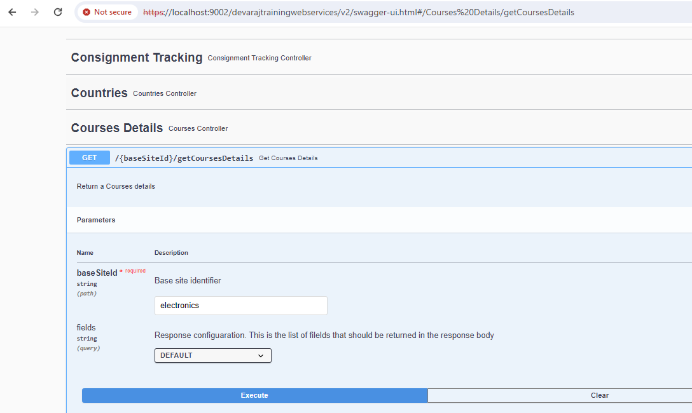
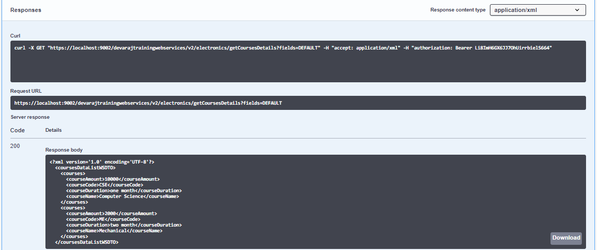
Method 2:Method for Creating the Courses Details by using the Create Method.
Steps for creating a new record in courses details:
We are using the already created Courses table and same classes as we are creating earlier.
1. Create the Reverse Popularor.
package com.hybris.clavrit.facades.populators; import com.hybris.clavrit.core.model.CoursesModel; import com.hybris.clavritfacades.Courses.data.CoursesData; import de.hybris.platform.converters.Populator; import de.hybris.platform.servicelayer.dto.converter.ConversionException; public class CoursesReversePopulator implements Populator<CoursesData, CoursesModel> { @Override public void populate(CoursesData source, CoursesModel target) throws ConversionException { target.setCourseCode(source.getCourseCode()); target.setCourseName(source.getCourseName()); target.setCourseDuration(source.getCourseDuration()); target.setCourseAmount(source.getCourseAmount()); } }
2. Define a new method for creating new Course details in Façade interface.
public interface CoursesFacade { public CoursesData createCoursesDetails(CoursesData coursesData); }
3. Implement the above create method in Façade Impl class.
import de.hybris.platform.converters.Converters; import de.hybris.platform.converters.Populator; import de.hybris.platform.servicelayer.dto.converter.Converter; public class CoursesImpl implements CoursesFacade{ private Populator<CoursesData, CoursesModel> reverseCoursesPopulator; public Populator<CoursesData, CoursesModel> getReverseCoursesPopulator() { return reverseCoursesPopulator; } public void setReverseCoursesPopulator(Populator<CoursesData, CoursesModel> reverseCoursesPopulator) { this.reverseCoursesPopulator = reverseCoursesPopulator; } @Override public CoursesData createCoursesDetails(CoursesData coursesData) { final CoursesModel coursesModel = getModelService().create(CoursesModel.class); getReverseCoursesPopulator().populate(coursesData, coursesModel); getModelService().save(coursesModel); return coursesData; } }
4. Create the bean id for step 1 and 3 in façade-springs.xml file.
<bean id="reverseCoursesPopulator" class="com.hybris.clavrit.facades.populators.CoursesReversePopulator"/> <bean id="coursesFacade" class="com.hybris.clavrit.facades.student.CoursesImpl"> <property name="reverseCoursesPopulator" ref="reverseCoursesPopulator"/> </bean>
5. Create the method in Controller to handle the POST method mapping, and in that call new method defined in façade Impl class.
import de.hybris.platform.commercewebservicescommons.errors.exceptions.RequestParameterException; import io.swagger.annotations.*; import org.springframework.http.HttpStatus; import org.springframework.http.MediaType; import org.springframework.security.access.annotation.Secured; import org.springframework.stereotype.Controller; import org.springframework.web.bind.annotation.*; import javax.annotation.Resource; public class CoursesController extends BaseCommerceController{ private static final String COURSES_MAPPING = "courseCode, courseName, courseDuration, courseAmount"; @Secured("ROLE_TRUSTED_CLIENT") @RequestMapping(value="/coursesDetails/create", method= RequestMethod.POST, consumes = { MediaType.APPLICATION_JSON_VALUE, MediaType.APPLICATION_XML_VALUE }) @ResponseBody @ApiOperation(nickname="createsNewCourses", value = "Creates a new courses.", notes = "Creates a new courses.") @ApiBaseSiteIdParam public CoursesDataWSDTO createCourse(@ApiParam(value = "Courses object", required = true) @RequestBody final CoursesDataWSDTO coursesDataWSDTO, @ApiParam(value="Response configuaration. This is the list of filelds that should be returned in the response body",allowableValues="BASIC,DEFAULT,FULL") @RequestParam final String fields) { CoursesData coursesData = getDataMapper().map(coursesDataWSDTO, CoursesData.class, COURSES_MAPPING); coursesData = createCoursesInternal(coursesData); return getDataMapper().map(coursesData,CoursesDataWSDTO.class,fields); } private CoursesData createCoursesInternal(CoursesData coursesData) { coursesFacade.createCoursesDetails(coursesData); return coursesData; } }
Output: Output for the Create Method.
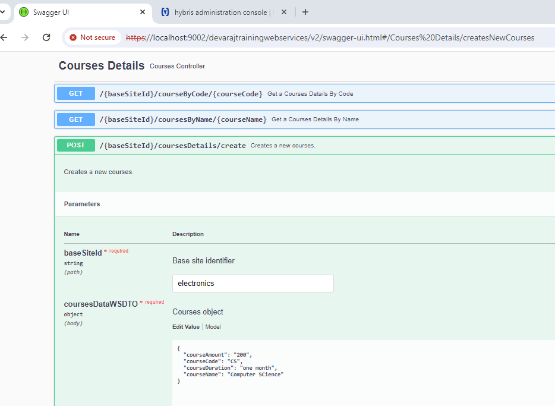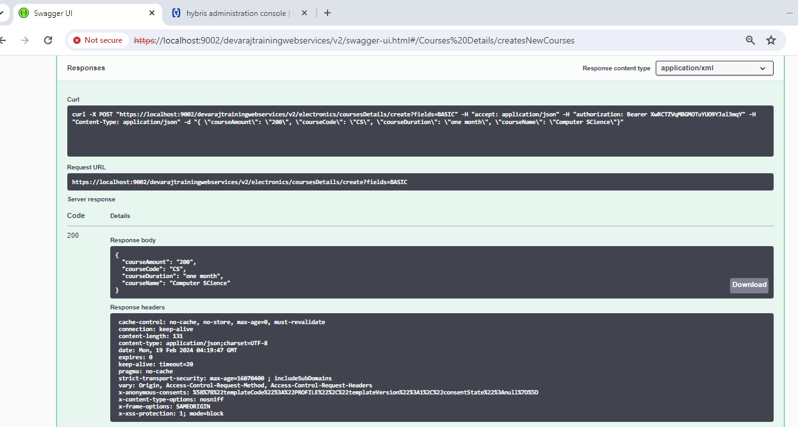
Now go to the HAC and open Flexible search query and write the query
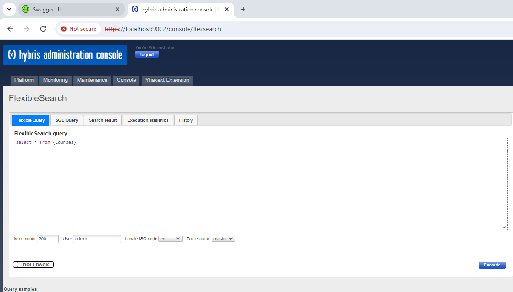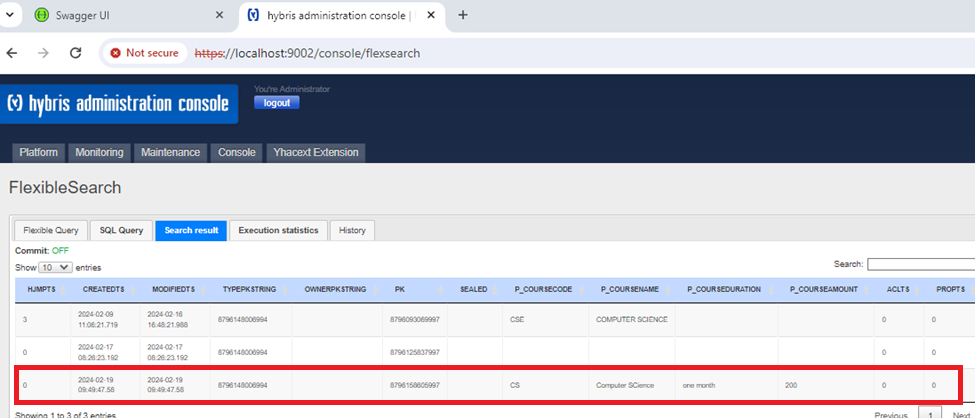
Method 3:Updating the values in Courses Item Type by using Patch and Put Methods
PUT: The entire updated representation of the resource must be provided in the request body. If a field is not provided, it is assumed to be null or empty.
PATCH:Only the fields that need to be updated are sent in the request body. The server applies these changes to the existing resource.
Steps for Updating the values in Courses Item Type by using PATCHand PUTMethods
1. Define a new method for updating the Course details in Service interface.
public interface CoursesService { public void putCoursesDetailsByCode(CoursesModel coursesModel); }
2. Implement the above created method in Service Impl class.
public class CoursesServicesImpl implements CoursesService{ @Override public void putCoursesDetailsByCode(CoursesModel coursesModel) { getModelService().save(coursesModel); } }
3. Define a new method for updating the Course details in Façade interface.
public interface CoursesFacade { public void putCoursesDetailsByCode(final CoursesData coursesData); }
4. Implement the above created method in Façade Impl class.
public class CoursesImpl implements CoursesFacade{ @Override public void putCoursesDetailsByCode(CoursesData coursesData) { final CoursesModel coursesModel = getCoursesService().getCouresesDetailsByCode(coursesData.getCourseCode()); getReverseCoursesPopulator().populate(coursesData, coursesModel); getCoursesService().putCoursesDetailsByCode(coursesModel); } }
5. Create the method in Controller to handle the PUT and PATCH method mapping, and in that call new method defined in façade Impl class.
public class CoursesController extends BaseCommerceController{ public static final String COURSES_DOES_NOT_EXIST = "Courses with given id: '%s' doesn't exist or belong to another courses"; public static final String INVALID = "invalid"; private static final String OBJECT_NAME_COURSES_ID = "courseCode"; @Resource(name="coursesFacade") private CoursesFacade coursesFacade; private static final String COURSES_MAPPING = "courseCode, courseName, courseDuration, courseAmount"; @Secured("ROLE_TRUSTED_CLIENT") @RequestMapping(value="/putCoursesByCode/{courseCode}", method= RequestMethod.PUT, consumes = { MediaType.APPLICATION_JSON_VALUE, MediaType.APPLICATION_XML_VALUE }) @ResponseBody @ResponseStatus(HttpStatus.OK) @ApiOperation(nickname = "putCourses", value = "Updates the courses", notes = "Updates the courses. Attributes not provided in the request will be defined again (set to null or default).") @ApiBaseSiteIdParam public void putCoursesDetails(@ApiParam(value = "Course code.", required = true) @PathVariable final String courseCode, @ApiParam(value = "Course object", required = true) @RequestBody final CoursesDataWSDTO coursesDataWSDTO) { final CoursesData coursesData = getCoursesData(courseCode); getDataMapper().map(coursesDataWSDTO, coursesData, COURSES_MAPPING, true); coursesFacade.putCoursesDetailsByCode(coursesData); } @Secured("ROLE_TRUSTED_CLIENT") @RequestMapping(value="/patchCoursesByCode/{courseCode}", method= RequestMethod.PATCH, consumes = { MediaType.APPLICATION_JSON_VALUE, MediaType.APPLICATION_XML_VALUE }) @ResponseBody @ResponseStatus(HttpStatus.OK) @ApiOperation(nickname = "patchCourses", value = "Updates the courses", notes = "Updates the courses. Only attributes provided in the request body will be changed.") @ApiBaseSiteIdParam public void patchCoursesDetails(@ApiParam(value = "Course Code.", required = true) @PathVariable final String courseCode, @ApiParam(value = "Courses object", required = true) @RequestBody final CoursesDataWSDTO coursesDataWSDTO) { final CoursesData coursesData = getCoursesData(courseCode); getDataMapper().map(coursesDataWSDTO, coursesData, COURSES_MAPPING, false); coursesFacade.putCoursesDetailsByCode(coursesData); } private CoursesData getCoursesData(final String courseCode) { final CoursesData coursesData = coursesFacade.getCoursesDetailsByCode(courseCode); if (coursesData == null) { throw new RequestParameterException(String.format(COURSES_DOES_NOT_EXIST, sanitize(courseCode)), RequestParameterException.INVALID, OBJECT_NAME_COURSES_ID); } return coursesData; } }
Output: for the Patch Method
Go to Backoffice
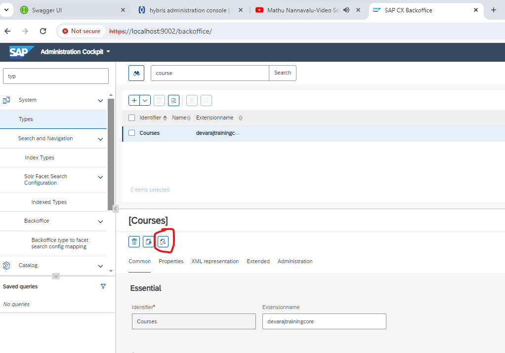After clicking the highlighted search option you can see data in Courses table
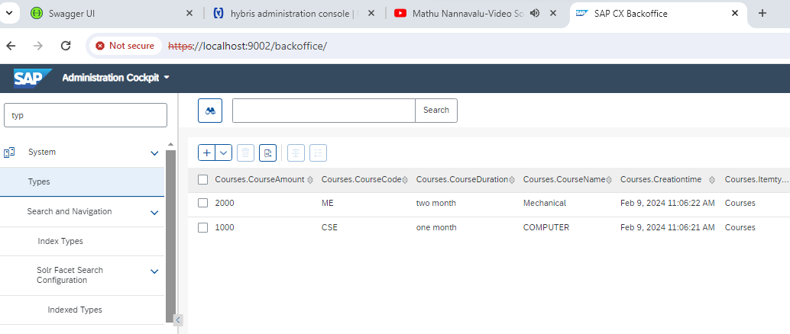Open the Swagger url
https://localhost:9002/clavritwebservices/v2/swagger-ui.html#/Courses%20Details/patchCourses
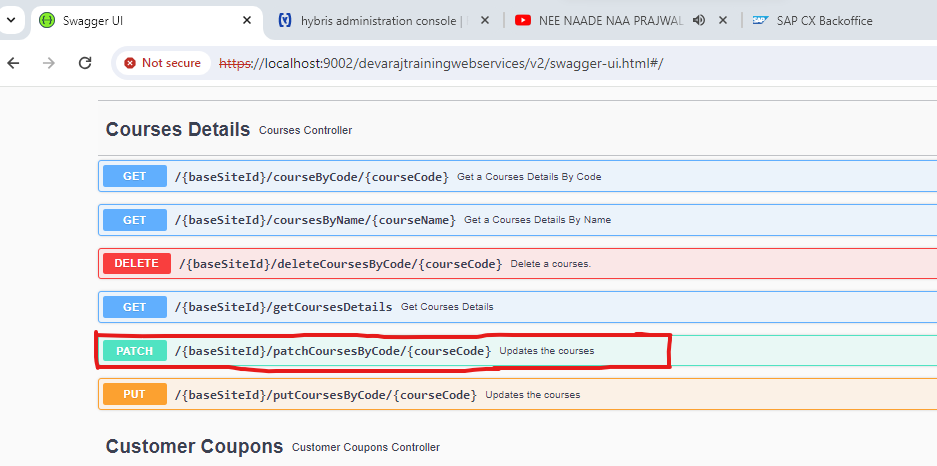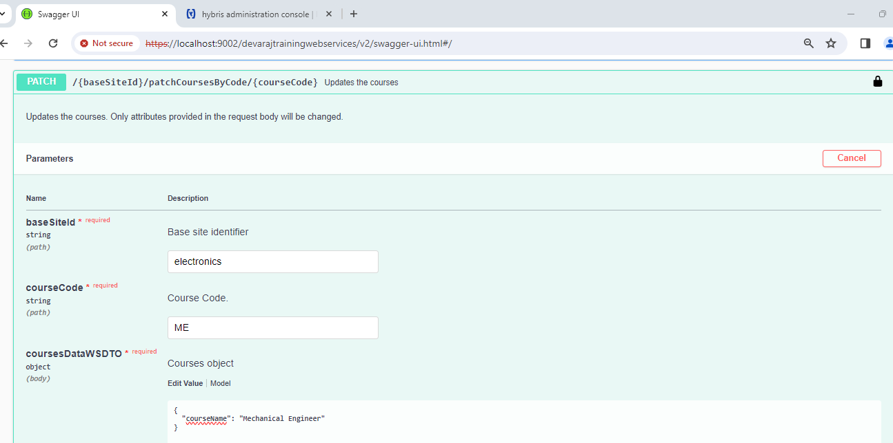
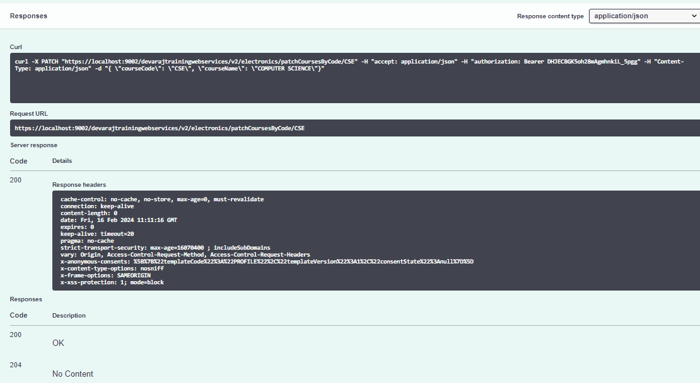
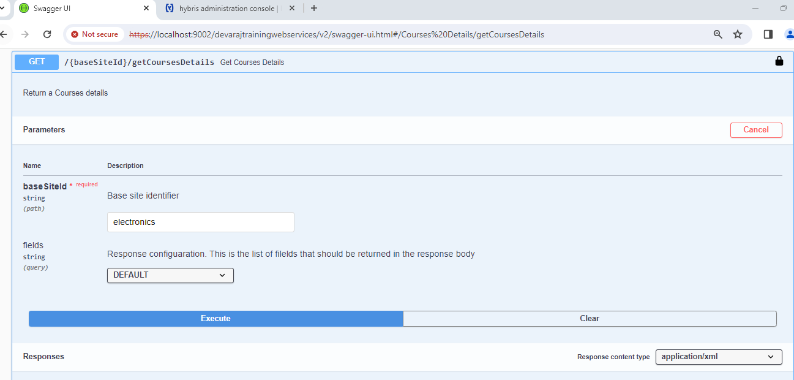
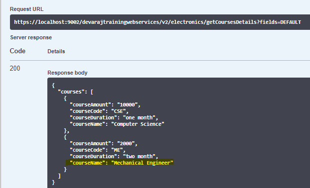
Output: for the Put method
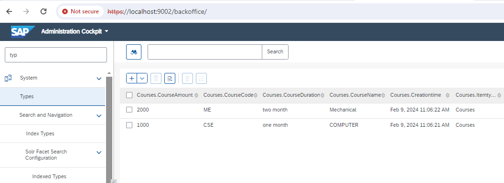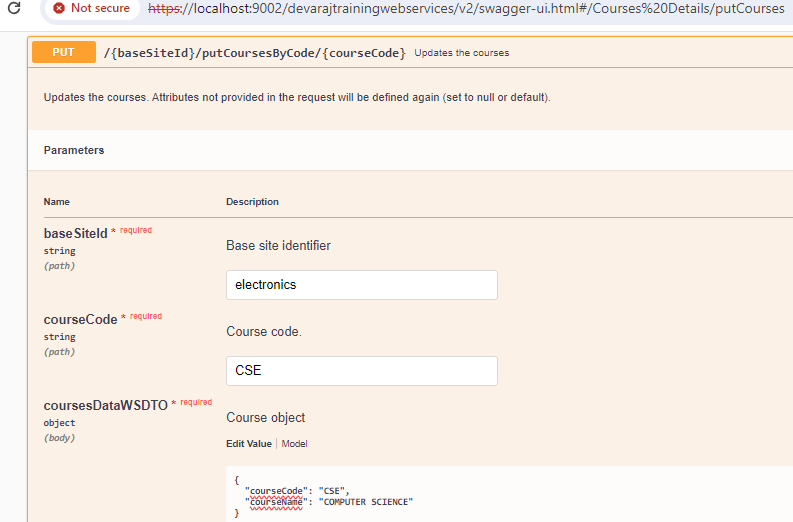
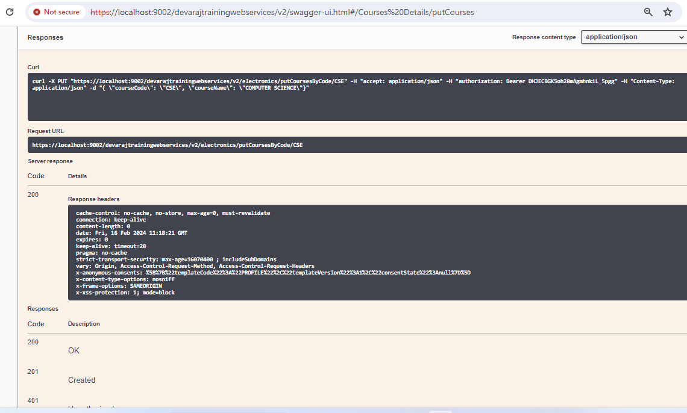
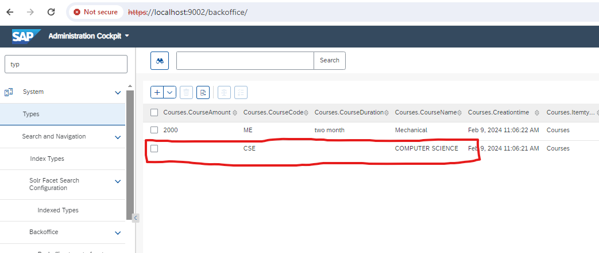
Here we have not provided Course Amount and Course Duration in the body, due to which there attributes are being set to null.
Method 4:Method for deleting the courses details in the Courses table.
Steps for deleting the courses details in the Courses table.
1. Define a new method for deleting Course details in Service interface.
public interface CoursesService { public void deleteCoursesDetailsByCode(CoursesModel coursesModel); }
2. Implement the above created method in Service Impl class.
public class CoursesServicesImpl implements CoursesService { @Override public void deleteCoursesDetailsByCode(CoursesModel coursesModel) { getModelService().remove(coursesModel); } }
3. Define a new method for deleting Course details in Façade interface.
public interface CoursesFacade { public void deleteCoursesDetailsByCode(final CoursesData coursesData); }
4. Implement the above created method in Façade Impl class.
public class CoursesImpl implements CoursesFacade { @Override public void deleteCoursesDetailsByCode(CoursesData coursesData) { final CoursesModel coursesModel = getCoursesService().getCouresesDetailsByCode(coursesData.getCourseCode()); getCoursesService().deleteCoursesDetailsByCode(coursesModel); } }
5. Create the method in Controller to handle the DELETE method mapping, and in that call new method defined in façade Impl class.
public class CoursesController extends BaseCommerceController { @Secured("ROLE_TRUSTED_CLIENT") @RequestMapping(value="/deleteCoursesByCode/{courseCode}", method= RequestMethod.DELETE) @ResponseBody @ApiOperation(nickname="deleteCourses", value = "Delete a courses.", notes = "Delete a courses.") @ApiBaseSiteIdParam public void deleteCoursesDetails(@ApiParam(value = "Course Code.", required = true) @PathVariable final String courseCode){ final CoursesData coursesData = getCoursesData(courseCode); coursesFacade.deleteCoursesDetailsByCode(coursesData); } }
Output:Output for the Delete Method
Go to Backoffice
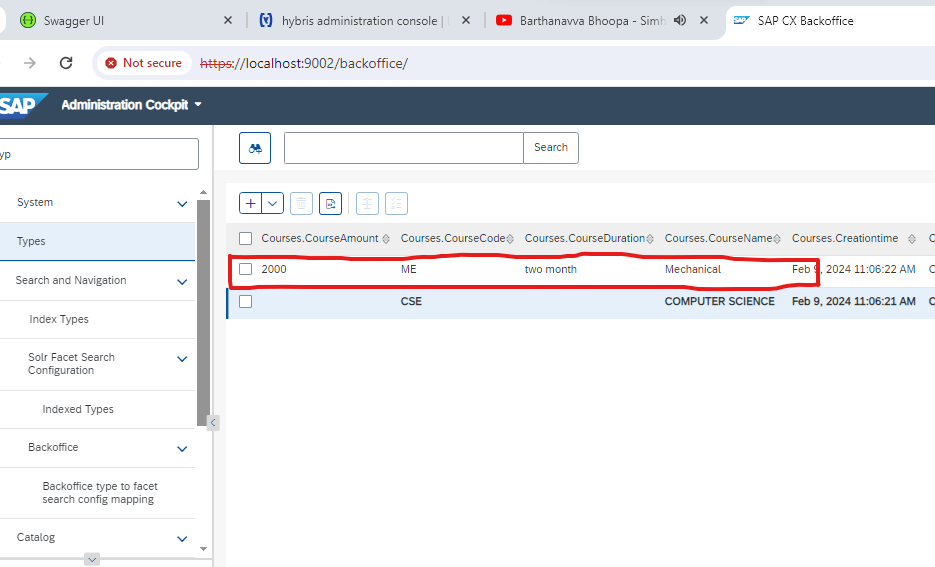
Open the Swagger Url
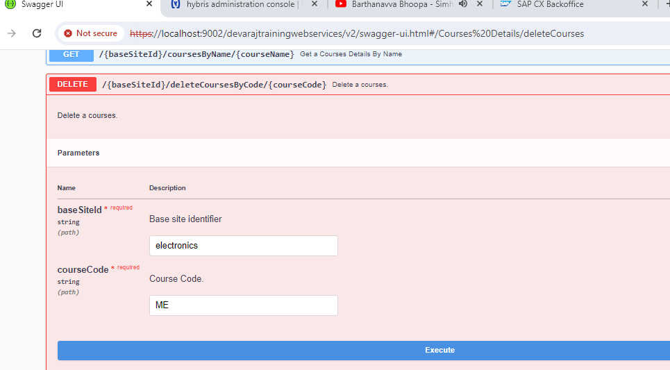
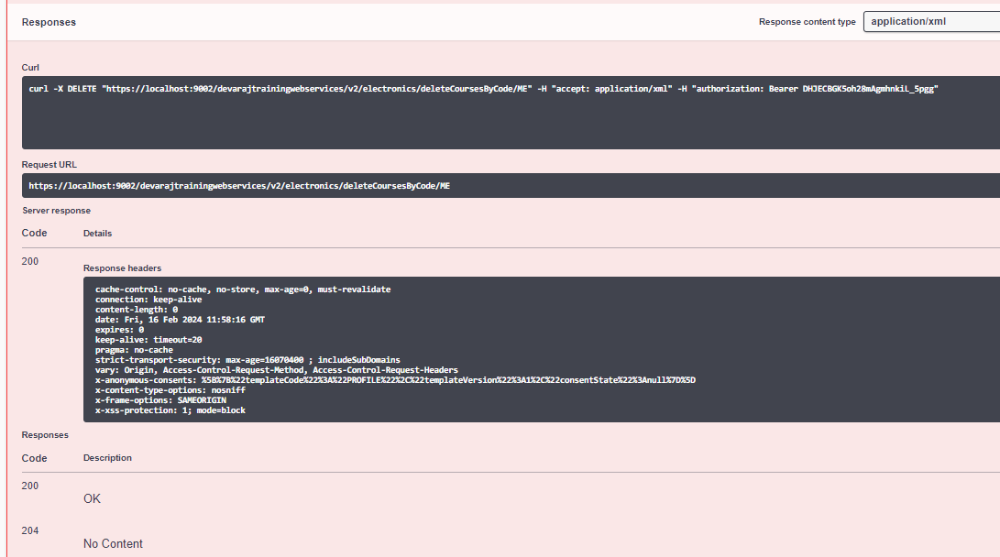
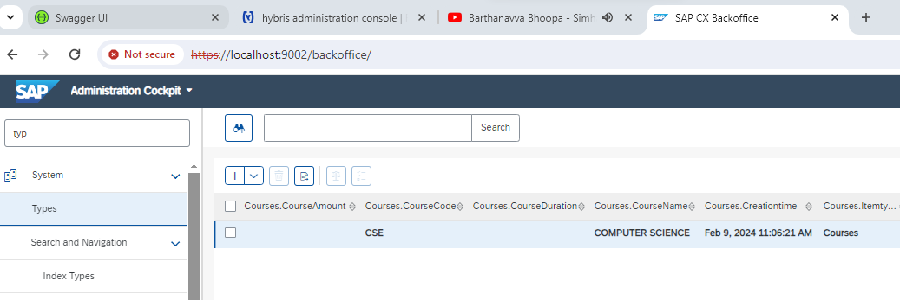